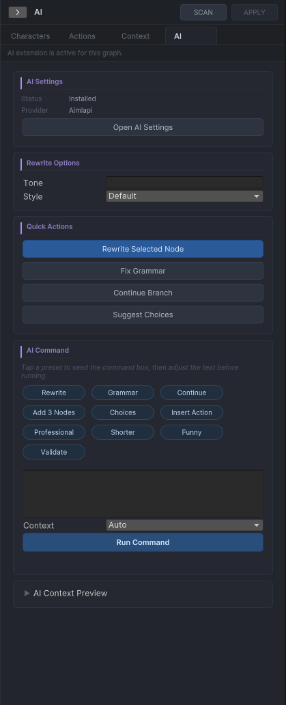
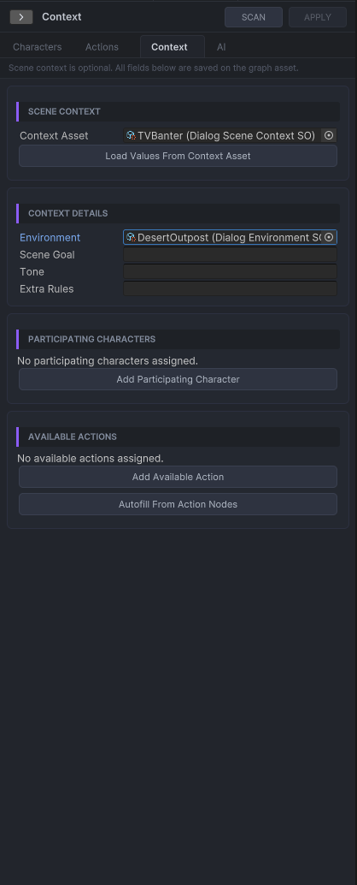

AI Extension
The optional AI extension provides command-based authoring assistance inside the graph editor. It proposes targeted, preview-first changes — rewrites, line insertions, action insertions — that you confirm before they are applied. It does not expose a raw full-graph generation or import workflow in the shipped release.
Key files
AiGraphCommandExecutor.cs— coordinates parse → validate → route → delegateAiInstructionRouter.cs— maps free-text instructions to command typesAiCommandSafetyValidator.cs— rejects any AI response containing GUIDs, positions, or edge definitionsAiJsonSanitizer.cs— strips markdown fences and fixes LLM encoding artifactsLlmProviderDefinitionBase.csand providers
Draft-first pipeline
User instruction (free text)
-> AiInstructionRouter (route + anchor resolve)
-> AiPromptBuilder
-> LLM Provider (HTTP)
-> AiJsonSanitizer
-> AiCommandSafetyValidator
-> AiDraftResponseParser
-> Preview window (human review)
-- confirm -->
-> DialogGraphMutationService (create nodes / edges / GUIDs)Ownership boundaries
The AI layer may only return rewritten text, draft dialog line content, draft action references, and draft choice content. The core graph layer exclusively owns GUIDs, node positions, edges, graph serialisation, and undo records. Any AI response that includes forbidden fields is rejected by AiCommandSafetyValidator before the graph is touched.
Provider model
The provider abstraction is LlmProviderDefinitionBase, with concrete providers for OpenAI-style chat completions, Gemini, Ollama, and custom JSON APIs.
Shipped provider assets are templates only. For OpenAI-compatible services, prefer a root baseUrl plus /v1/chat/completions in chatEndpoint.
Editor entry point
Open any DialogGraph asset via Tools → Dialogue Graph System → Dialogue Graph, then select the AI tab in the right sidebar.
AI sidebar controls
- Instruction field — multi-line free-text input. Describe what you want in plain language (e.g. "rewrite this line to sound more nervous", "add 3 dialog nodes before the end").
- Tone selector — Neutral, Serious, Humorous, Dramatic, Casual, Poetic. Applied as a style hint in the prompt.
- Instruction preset — None, Write Naturally, Keep It Short, Add Subtext, Make It Tense. Adds a system-level writing directive to every prompt.
- Run button — routes the instruction, resolves the anchor node, dispatches to the handler, and opens the preview window.
- Routing explanation label — shows which command was detected, the confidence score, and which anchor node was matched.
- Low-confidence anchor warning — if the anchor match confidence is below 0.75, a warning is shown with the matched node title before execution. You can cancel or proceed.
- Context summary — shows the loaded graph name, active speaker count, and available action count.
Command reference
The AI extension supports 13 command types, all routed automatically from your free-text instruction.
| Command | What it does |
|---|---|
RewriteDialog | Rewrites the text of the selected dialog node. Opens a single-node preview with current vs. proposed text. |
GrammarFix | Corrects grammar and punctuation in the selected node's text only — no style changes. |
AddDialogNodesAfter | Inserts one or more dialog nodes after an anchor node. Use phrases like "add 3 lines after the guard". |
AddDialogNodesBeforeEnd | Legacy alias — resolved to AddDialogNodesAfter with the End node as anchor. |
InsertActionNode | Inserts a single action node after the selected node. The AI suggests the action ID and payload. |
AddChoiceNodeAfter | Inserts a choice node with AI-suggested options after an anchor node. |
SuggestChoices | Proposes choice option text for the selected dialog node without inserting nodes. |
ContinueBranch | Extends the selected branch with additional dialog content continuing from the current anchor. |
ExpandSelectedNode | Expands the selected dialog node into a small multi-node branch with optional choices. |
BatchRewriteBySpeaker | Rewrites all dialog lines for a specific speaker in one pass. Preview shows per-row accept/reject toggles — all rows default to accepted, so you only deselect the ones you want to keep. |
GenerateDialogChainDraft | Generates a full anchored dialog draft chain from the instruction. |
GenerateDialogFlowDraft | Generates a structured conversation flow from a DialogSpecificationSO (set in the Context tab) or from the free-text instruction alone. |
ValidateGraph | Runs the graph validator and surfaces errors and warnings inside the AI sidebar. |
LLM providers
Providers are ScriptableObject assets. API keys are stored in EditorPrefs per asset GUID and are never written into the asset file or committed to version control.
| Provider | Default model | Notes |
|---|---|---|
| OpenAI | gpt-4.1-mini | Compatible with LM Studio, Groq, Together AI — change the base URL only. |
| Gemini | gemini-2.5-flash | Uses Google's Generative Language API. |
| Ollama | gpt-oss:20b | Local inference at http://localhost:11434. |
| Custom JSON | User-configured | Any endpoint that accepts a JSON body and returns a JSON response. |
Sample provider assets are in Assets/DialogSystemAIExtension/Samples/Assets/Provider/. Duplicate one and set your own API key and model — samples are templates only.
Token usage and temperature
Each provider asset exposes two generation controls you can tune per-provider:
- Max Tokens — maximum number of tokens the model may return per response. Default is
512. Increase for longer generation commands likeGenerateDialogFlowDraft; lower it for single-node rewrites to reduce cost and latency. - Temperature — controls output randomness. Default is
0.7. Lower values (0.3–0.5) produce more predictable, conservative text; higher values (0.9–1.0) produce more varied and creative output.
Context depth — how much of the graph the AI sees
The AI sidebar includes a Context Depth dropdown that controls how much graph content is included in each prompt. More context produces better results but uses more tokens.
| Option | What the AI sees |
|---|---|
| Minimal (selected only) | Only the selected/anchor node. Fastest and cheapest. |
| Local (nearby nodes) | The anchor node and its immediate neighbors. Good default for rewrites. |
| Path (branch) | The full branch from Start to the anchor node. Best for continuation and expansion commands. |
| Full graph | All nodes in the graph. Best for batch rewrites, flow generation, and validation. Uses the most tokens. |
Each command type has a sensible default depth selected automatically. You can override it with the dropdown before running any command.
DialogSpecificationSO
A ScriptableObject for structured narrative context, used by GenerateDialogFlowDraft. Create one via Assets → Create → Dialogue Graph System → AI → Dialogue Specification and assign it in the Context tab of the graph editor sidebar.
conversationDepth(2–20) — how many exchanges to generate.characters— list ofDialogCharacterSOassets participating in the scene.environment— location, description, time of day, mood.gameContext— genre, player role, narrative style, canon rules.sceneSummary,tone— free-text directives.allowedActions/forbiddenActions— constrain which action IDs the AI may suggest.
Safety and recovery
AiJsonSanitizer handles common LLM formatting issues such as markdown fences and stray prose. If a response is recovered from malformed output, a warning banner appears in the preview — review the draft carefully before confirming.
AiCommandSafetyValidator rejects any AI response that contains GUIDs, node positions, or edge definitions before the graph is touched. The AI layer is structurally prevented from owning any graph mutation.
AI tab in the graph editor sidebar

Command input, tone and preset selectors, routing explanation label.
Draft preview window

Shows the proposed change before it is applied to the graph.
Context sidebar

Scene summary, world context, and specification asset for GenerateDialogFlowDraft.
Branch review panel

Proposed branch additions shown for review before being committed to the graph.